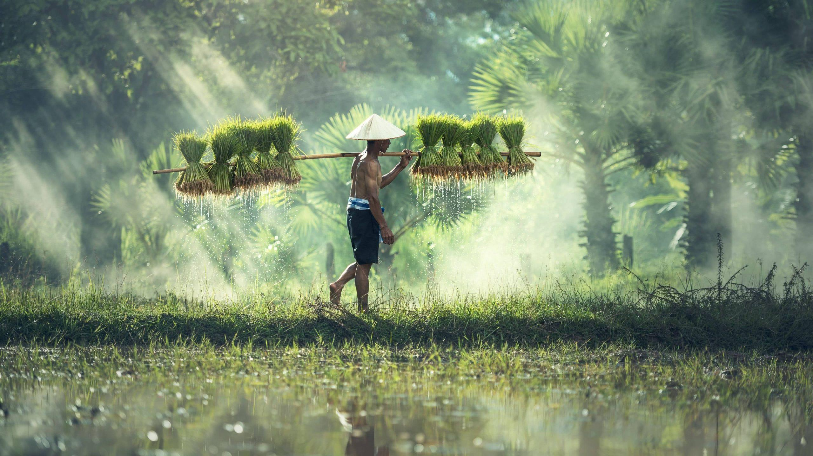
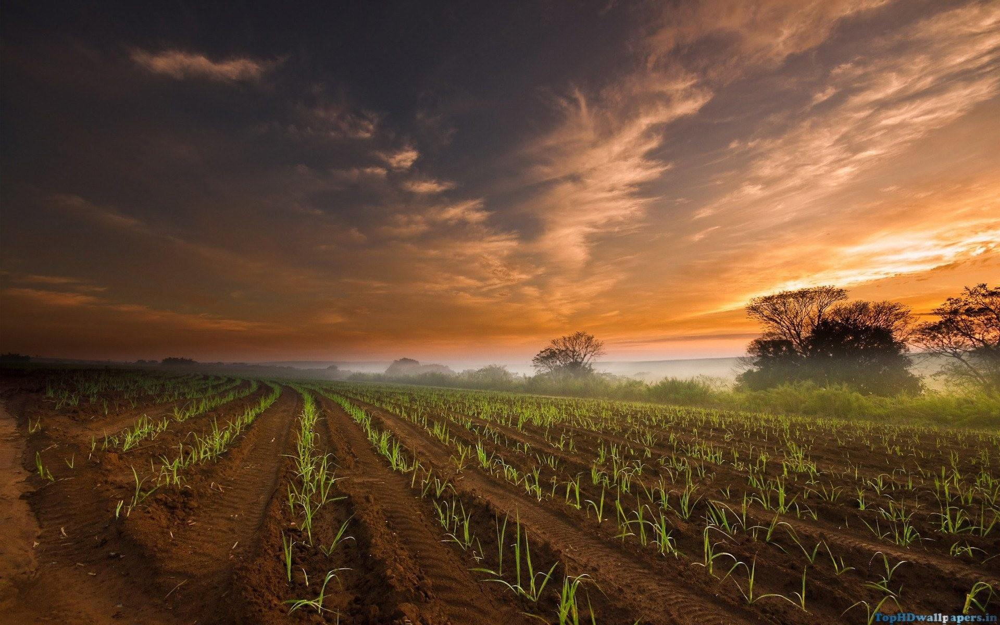

Green Acres Farm
Committed to sustainable and eco-friendly farming practices.
Organic
Fair Trade

Sunny Fields Farm
Focused on growing organic produce using eco-friendly methods.
Organic
Fair Trade

EcoBreeze Farm
A farm dedicated to environmental sustainability and water conservation.
Organic
Fair Trade

Harvest Moon Farm
Implementing crop rotation and sustainable practices to preserve soil health.
Organic
Fair Trade

Fresh Roots Farm
Using only renewable resources and natural fertilizers to promote biodiversity.
Organic
Fair Trade

Golden Fields Farm
A sustainable farm focused on permaculture techniques and soil regeneration.
Organic
Fair Trade